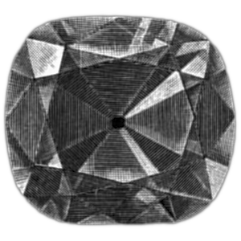

血まみれメアリー
別名: Bloody Mary、鏡の儀式
暗い部屋で鏡に向かい名前を3回唱えると現れるとされる霊。心理学の実験で、この状況では実際に顔が歪んで見えることが確認されている。

暗い部屋。ろうそくを1本だけ灯す。鏡の前に立ち、「ブラッディ・マリー」と3回唱える。すると鏡に血まみれの女が現れ、引きずり込まれる——英語圏の子どもたちのあいだで広く知られる儀式である。
誰なのか
メアリーが誰を指すかは一定しない。
- メアリー1世（イングランド女王、1516-1558）— プロテスタントを弾圧し「ブラッディ・メアリー」と呼ばれた実在の人物
- 魔女として処刑された女性
- 事故で死んだ若い母親
- 子どもを失った女性
由来は後付けとみられ、儀式のほうが先にあった可能性が高い。
もとは占いだった
この儀式の原型は、19世紀の英語圏に広く伝わっていた結婚占いだとされる。
ハロウィンの夜、若い女性がろうそくを持って階段を後ろ向きに上り、鏡を覗く。すると将来の夫の顔が映る——という遊びである。ただし、死ぬ運命なら骸骨が映るとも言われた。
祝福を求める占いが、20世紀のうちに恐怖の儀式へ反転した。
実際に顔は歪む
確認されていること：2010年、イタリアの心理学者ジョヴァンニ・カプートが実験を行い、学術誌に発表した。
被験者を薄暗い部屋に座らせ、1メートル先の鏡の自分の顔を10分間見つめさせた。結果、参加者の大半が顔の変容を報告した。
・自分の顔が歪む、別人に見える（66%）
・親や祖父母の顔が見える（18%）
・動物の顔、怪物のような顔が見える（48%）
これは「ストレンジフェイス錯視」と名付けられた。薄暗い環境で1点を凝視し続けると、視野の一部が消える現象（トロクスラー効果）と、脳の顔認識の働きが組み合わさって生じると説明されている。
被験者を薄暗い部屋に座らせ、1メートル先の鏡の自分の顔を10分間見つめさせた。結果、参加者の大半が顔の変容を報告した。
・自分の顔が歪む、別人に見える（66%）
・親や祖父母の顔が見える（18%）
・動物の顔、怪物のような顔が見える（48%）
これは「ストレンジフェイス錯視」と名付けられた。薄暗い環境で1点を凝視し続けると、視野の一部が消える現象（トロクスラー効果）と、脳の顔認識の働きが組み合わさって生じると説明されている。
つまり
この儀式の手順——暗い部屋、単一の弱い光源、鏡を凝視、時間をかける——は、ストレンジフェイス錯視を起こす条件と完全に一致している。
子どもたちが何世代にもわたって、意図せず心理学の実験を再現していたことになる。「本当に何かが見える」という体験談は、嘘ではない。
日本の類例
日本にも、合わせ鏡を覗くと未来や死者が見えるという言い伝えがある。同じく暗所での凝視を伴う。
洋の東西を問わず、鏡は境界の道具として扱われてきた。実際に脳の錯覚を起こしやすい装置だったことが、その位置づけを支えていたのかもしれない。
出典・参考
- ブラッディ・マリー（日本語版ウィキペディア）伝承と儀式の概観
関連する項目
 心霊・幽霊屋敷アミティヴィルの恐怖一家が28日で逃げ出したとされる家。ベストセラーと映画で世界に広まったが、事件を担当した弁護士が「話は作り物だった」と証言している。
心霊・幽霊屋敷アミティヴィルの恐怖一家が28日で逃げ出したとされる家。ベストセラーと映画で世界に広まったが、事件を担当した弁護士が「話は作り物だった」と証言している。 UFO・UAPエリア51ネバダ州の砂漠にある米空軍の秘密施設。存在自体が長く否定されていたが、2013年に機密解除文書で公式に認められた。UFO伝説の中心地。
UFO・UAPエリア51ネバダ州の砂漠にある米空軍の秘密施設。存在自体が長く否定されていたが、2013年に機密解除文書で公式に認められた。UFO伝説の中心地。 UMA・未確認生物ビッグフット北米の森林地帯で目撃される、二足歩行の大型類人猿とされる存在。1967年に撮影された動画が最大の根拠であり、同時に最大の争点でもある。都市伝説八尺様身長約240センチの女性の姿をした怪異。2008年に匿名掲示板へ投稿された物語で、ネット発の怪談としては異例の広がりを見せた。
UMA・未確認生物ビッグフット北米の森林地帯で目撃される、二足歩行の大型類人猿とされる存在。1967年に撮影された動画が最大の根拠であり、同時に最大の争点でもある。都市伝説八尺様身長約240センチの女性の姿をした怪異。2008年に匿名掲示板へ投稿された物語で、ネット発の怪談としては異例の広がりを見せた。
呪い・呪物ホープダイヤモンド持ち主を不幸にするとされる青いダイヤ。だがその「呪い」の逸話の多くは、宝石商が売るために作った宣伝文句だった。犬鳴村伝説都市伝説犬鳴村伝説福岡県に「日本国憲法が通用しない村」があるという噂。実在するのは廃道になった旧トンネルと、そこで実際に起きた凄惨な事件である。